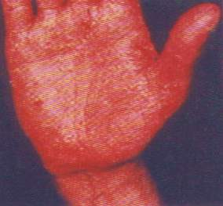

"Zum Fegfeuer" Der etwas andere Klosterladen
"Zum Fegfeuer" Der etwas andere Klosterladen



 Wobei die Problematik des Zements gering gegen die Personengefährdung - das heißt also Mann, Frau und Kind, Opa, Oma, Onkel
und Tante, Freund und Feind, Mieter und Vermieter - durch Wärmedämmung und nasse Häuser ist, und da trifft es eben nicht
nur die Handwerker. Wenn Sie auch dazu mehr wissen wollen -
Wobei die Problematik des Zements gering gegen die Personengefährdung - das heißt also Mann, Frau und Kind, Opa, Oma, Onkel
und Tante, Freund und Feind, Mieter und Vermieter - durch Wärmedämmung und nasse Häuser ist, und da trifft es eben nicht
nur die Handwerker. Wenn Sie auch dazu mehr wissen wollen - Wärmedämmung?
Wärmedämmung?
 Feuchte/Salz?
Feuchte/Salz?
 Heizung?
Heizung?
 Fenster schwitzen?
Fenster schwitzen?
 Schimmelpilz wuchert?
Schimmelpilz wuchert?ibau-Planungsinformationen 26.7.1999:
Wiesbaden - Die Berufsgenossenschaften der Bauwirtschaft weisen darauf hin, daß die Maurerkrätze die häufigste Hauterkrankung am Bau ist. Besiegt werden kann sie nur durch die Kombination dreier Schutzmaßnahmen: Schutzhandschuhe, Hautschutz und den konsequenten Einsatz von chromatarmem Zement.
70 Millionen DM im Jahr müssen allein die Berufsgenossenschaften für Behandlung, Umschulung, Renten und Abfindungen aufgrund von Maurerkrätze aufwenden. Für den Unternehmer entstehen direkte Kosten durch Ausfall des Mitarbeiters und den gestörten Produktionsablauf. Hinzu kommen Lohnfortzahlung und Behandlungskosten bei den Krankenkassen sowie Rentenzahlungen durch Berufsunfähigkeit. Zusammengenommen schlägt die Maurerkrätze am Ende eines jeden Jahres volkswirtschaftlich mit einer dreistelligen Millionenhöhe zu Buche.
Die Maurerkrätze ist die häufigste Hauterkrankung am Bau. Sie wird durch den Chromatgehalt des Zements verursacht und durch die Alkalität des Frischmörtels bzw. -betons verstärkt. Maurerkrätze entsteht durch häufigen und intensiven Hautkontakt beim Verarbeiten von Zement. Da die Maurerkrätze eine allergische Erkrankung ist, kann sie auch nach dem Abheilen eines Ekzems wieder auftreten, wenn es erneut zu Hautkontakt mit Zement bzw. Frischmörtel kommt."
ibau-Planungsinformationen 17.3.1998:
Besonders schädlich sind aber die Chromate im Zement. Diese sind eigentlich nur Verunreinigungen, die keine technische Auswirkung auf das fertige Zementprodukt haben. Durch monatelangen oder gar jahrelangen Hautkontakt mit solchen wasserlöslichen Chromaten kann die unangenehmste und häufigste Form der Maurerkrätze entstehen, die Chromatallergie. Sie macht bis zu 90 Prozent aller zementbedingten Hautkrankheiten aus. Bei stark ausgeprägter Allergie ist der Erkrankte nicht selten gezwungen, seinen bisherigen Beruf aufzugeben."
Chromatanteil muß gesenkt werden
Bei den in Deutschland bisher produzierten Zementsorten ist der Gehalt an wasserlöslichen Chromaten oft sehr hoch. In manchen Fällen beträgt er bis zu 25 ppm (engl. parts per million, d.h. Teile pro Million). Einige in Deutschland verwendete Zemente aus Polen oder Tschechien weisen mit bis zu 40 ppm sogar noch höhere Chromatanteile auf. [...]"
Helmke: Wir können eine ganze Menge tun. Aber es bleibt dabei, dass chromatreduzierter Silozement in Deutschland praktisch nicht verfügbar ist, und jeder Mörtelformulierer seine eigenen Überlegungen zur Vermeidung des Chromatgehaltes anstellen muss. Wenn aber - und das erlaubt die Branchenregelung immer noch - weiterhin der Zement vielfach nur zu Mörtel "verdünnt" und nicht echt chromatreduziert wird, sehe ich nur wenig Änderung in der Erkrankungszahl voraus. Dann tritt womöglich nur beim Sackzement eine qualitative Änderung ein - und nicht auch bei den Trockenmörteln, die ja allesamt aus Silozement hergestellt werden und deren Einsatz immer noch zunimmt.
B+B: Konkret: Glauben Sie, dass wir in fünf Jahren [...] eine Verschärfung des 2-ppm-Wertes erleben?
Helmke: Davon gehe ich aus. Schließlich kann die Inkubationszeit bei Maurerkrätze bis zu 15 Jahre betragen. Je schwächer jede neue Chromat-"Dosis", desto besser also. Denn: Beim händischen Verarbeiten von zementären Produkten treten auch alkalische Hautreizungen auf. Dann können Chromate die Hand sowieso leichter angreifen."
Weiter: 16: Zement - ein unreiner Baustoff